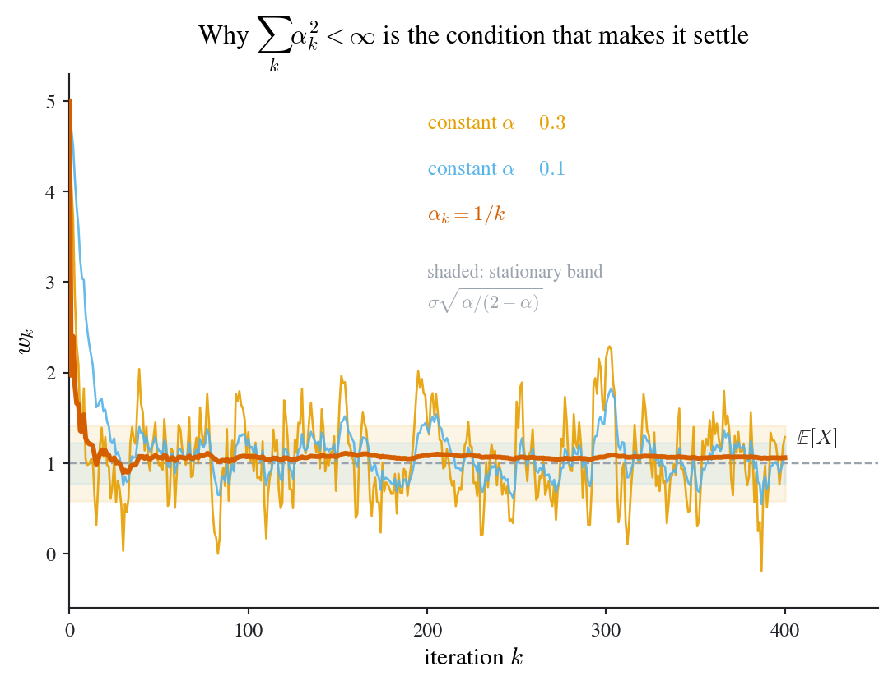

Replacing Howard policy iteration’s exact evaluation step with a sample average of returns gives the MC Basic algorithm. Stochastic approximation then provides convergence results for equations observed with noise and the basis for temporal-difference learning.
whose solution is an optimal policy \(a=\pi(s)\). We now use two RL conventions.
NoteNotation: from β to γ, and from deterministic to stochastic policies
From this chapter onward:
the discount factor is written \(\gamma\) rather than \(\beta\);
policies are stochastic, \(a_{t}\sim\pi(\cdot\given s_{t})\), so \(\pi(a\given s)\) is a probability rather than a chosen action.
Chapter 1 uses \(\beta\) and deterministic \(\pi(s)\); the underlying control problem is unchanged.
Under a stochastic policy the maximization in the Bellman equation Equation 1.4 is over distributions over actions rather than over actions, so the one-step reward and the transition both get averaged against \(\pi\):
Definition 2.1 (Policy-averaged reward and transition) For a policy \(\pi\), define the policy-averaged reward and the policy-averaged transition\[
r_{\pi}(s)=\sum_{a\in\mathcal{A}}\pi(a\given s)\,r(s,a),
\qquad
p_{\pi}(s'\given s)=\sum_{a\in\mathcal{A}}\pi(a\given s)\,p(s'\given s,a).
\]
Equation 2.2 says a stochastic policy induces an ordinary Markov reward process: fix \(\pi\) and the controlled process \((r_{\pi},p_{\pi})\) is just an MRP in the sense of Definition 1.1. This is why the matrix-vector machinery of Chapter 1 carries over unchanged, with \(\mathbf{r}_{\pi}\) and \(\mathbf{P}_{\pi}\) now built from Definition 2.1.
2.2 Monte Carlo methods
Monte Carlo policy iteration estimates action values from sampled returns.
Where the model still hides
Recall the two steps of Howard policy iteration, now in RL notation:
the transition density \(p(s'\given s,a)\) and the reward \(r(s,a)\)
trajectories generated by \(\pi_{k}\)
Computed by
a sum over next states
an average over sampled returns
Available when
the model is known
you can only interact with the environment
The derivation under Definition 1.3 establishes their equivalence. Since Equation 2.6 is an expectation, it can be estimated by averaging sampled returns.
Estimating \(q\) from episodes
start from \((s,a)\), follow \(\pi_{k}\), and generate an episode \(t=0,1,\dots,T\);
do this \(N\) times, collecting episodes \(i=1,2,\dots,N\);
Figure 2.1: The two errors of Equation 2.7 die at different rates. Left: truncating each episode at \(T\) leaves a deterministic bias \(\gamma^{T+1}\bar{r}/(1-\gamma)\), geometric in \(T\) but with a rate set by \(\gamma\): at \(\gamma=0.9\) two hundred steps buys eight digits, at \(\gamma=0.99\) it buys barely one. Right: averaging \(N\) episodes leaves sampling error of order \(N^{-1/2}\) (dots simulated at \(\gamma=0.9\), \(T=200\); dashed line the \(-1/2\) reference slope), independent of \(\gamma\). Buying a digit of accuracy costs a fixed number of extra steps but a hundredfold increase in episodes.
Given an initial policy \(\pi_{0}\), at iteration \(k\), for every state \(s\in\mathcal{S}\) and every action \(a\in\mathcal{A}(s)\):
Collect sufficiently many episodes starting from \((s,a)\) and following \(\pi_{k}\).
Policy evaluation. Estimate the action value by the average return over those episodes: \[
q_{\pi_{k}}(s,a)\approx q_{k}(s,a)=\text{average return of all collected episodes}.
\]
Policy improvement. Act greedily with respect to the estimate: \[
a_{k}^{*}(s)=\argmax_{a}q_{k}(s,a),
\qquad
\pi_{k+1}(a\given s)=
\begin{cases}
1 & \text{if } a=a_{k}^{*}(s),\\
0 & \text{otherwise.}
\end{cases}
\]
MC Basic is policy iteration with one component swapped out:
Table 2.2: MC Basic is Howard policy iteration with sample averages in place of the exact evaluation step.
\(\argmax_{\pi}\{\mathbf{r}_{\pi}+\gamma\mathbf{P}_{\pi}\mathbf{v}_{\pi_{k}}\}\), reads the model
\(\argmax_{a}q_{k}(s,a)\), reads only the estimates
Needs the model
yes
no
A state value cannot be turned into a decision on its own: converting \(v\) into a policy requires the model, as the improvement row of Table 2.2 shows. When the model is unavailable, estimate the object that is directly comparable across actions.
Step 1 assumes episodes can be started from any pair \((s,a)\), an assumption usually called exploring starts. This supplies exploration; the next section replaces it with policy-based exploration.
Convergence. Policy iteration converges, and MC Basic is policy iteration, so MC Basic converges too, given sufficiently many episodes at every step.
Important
MC Basic collects a fresh batch of episodes for every state-action pair at every iteration and discards previous batches. This makes it sample-inefficient. It illustrates the replacement expectation \(\to\) sample average.
Exploring starts requires resetting the environment to an arbitrary state-action pair, which is usually unavailable. Greedy improvement in step 3 of MC Basic assigns probability 1 to one action, so following it supplies no data about other actions. A policy that retains some randomization supplies exploration without arbitrary resets.
Definition 2.2 (ε-greedy policy) For \(\eps\in[0,1]\), the \(\eps\)-greedy policy with respect to \(q\) is \[
\pi(a\given s)=
\begin{cases}
1-\dfrac{\eps}{|\mathcal{A}(s)|}\big(|\mathcal{A}(s)|-1\big) & \text{if } a=\argmax_{a'}q(s,a'),\\[8pt]
\dfrac{\eps}{|\mathcal{A}(s)|} & \text{otherwise.}
\end{cases}
\]
Tip
Read Definition 2.2 as: with probability \(1-\eps\) act greedily, and with probability \(\eps\) pick uniformly at random among all actions. The greedy action keeps the largest share for any \(\eps<1\), so the policy still improves; but every action keeps probability at least \(\eps/|\mathcal{A}(s)|>0\), so no action is ever starved of data. Setting \(\eps=0\) recovers the greedy policy of MC Basic; setting \(\eps=1\) gives the uniform policy.
The parameter \(\eps\) controls the exploitation-exploration trade-off. An \(\eps\)-greedy policy is soft: every action has positive probability everywhere, so a single sufficiently long episode visits every \((s,a)\) pair infinitely often, provided every state is reachable under \(\pi\) from the start distribution and the induced chain is therefore irreducible on \(\mathcal{S}\). Under these conditions, the policy supplies exploration without exploring starts.
Warning
Restricting improvement to \(\eps\)-greedy policies means the algorithm converges to the best policy among \(\eps\)-greedy policies, not to the optimal policy, and the gap grows with \(\eps\). The standard fix is to shrink \(\eps\) toward zero as learning proceeds: explore aggressively while the estimates are bad, and act greedily once they are good.
2.3 Stochastic approximation
Stochastic approximation is useful here for two reasons.
It is the essential preliminary for temporal-difference learning, and so the bridge from Monte Carlo RL to TD, the update Chapter 1 introduced as Equation 1.3 without justifying it.
It has many applications in economics beyond RL.
Motivating example: mean estimation
Consider mean estimation. Given a random variable \(X\) and iid samples \(\{x_{i}\}_{i=1}^{N}\), estimate \(\E[X]\) by
Action values (Equation 2.6) and policy gradients are expectations, so mean estimation underlies the algorithms developed here.
There are two ways to compute \(\bar{x}\).
Batch. Collect all samples, then average. The drawback: if samples arrive one at a time over a period, nothing can be reported until the last one lands.
Incremental. Update the estimate as each sample arrives.
Let \(w_{k+1}\) denote the average of the first \(k\) samples,
Equation 2.8 is Equation 1.1 from Chapter 1 with the index shifted: here \(w_{k+1}\) is the mean of the first \(k\) samples, there \(\bar{x}_{k}\) is. The recursion is the same; only the label on the counter moved. This chapter uses the \(w\) convention because it is the one the stochastic-approximation literature writes the Robbins-Monro algorithm in.
Now generalize by replacing the step \(\tfrac{1}{k}\) with an arbitrary positive \(\alpha_{k}\):
NoteImplementation: the generalized incremental mean
The loop body is Equation 2.9 verbatim; alpha is either a float, giving a constant step, or an array of per-iteration steps \(\alpha_{k}\). Passing \(\alpha_{k}=1/k\) recovers the running mean of the first \(k\) samples exactly, whatever the starting guess \(w_{0}\), and that is what the closing assertion checks.
def mean_estimation_path(x, alpha, w0):"""Run w_{k+1} = w_k - alpha_k (w_k - x_k) over the sample stream x. Returns the path [w_1, ..., w_{N+1}] of estimates. """ n =len(x) a = np.full(n, alpha, float) if np.isscalar(alpha) else np.asarray(alpha, float) w = np.empty(n +1) w[0] = w0for k inrange(n): w[k +1] = w[k] - a[k] * (w[k] - x[k])return wx = np.random.default_rng(20260725).normal(0.0, 1.0, 50)w = mean_estimation_path(x, 1.0/ np.arange(1, 51), w0=99.0)assert np.allclose(w[1:], np.cumsum(x) / np.arange(1, 51)) # 1/k IS the running mean
This still converges to \(\E[X]\) under mild conditions on \(\{\alpha_{k}\}\). Those conditions are the subject of the rest of this section: Equation 2.9 is a special case of the Robbins-Monro algorithm.
The Robbins-Monro algorithm
Stochastic approximation (SA) uses stochastic iterative algorithms for root-finding or optimization. It can operate with noisy function observations, without an explicit objective or its derivative. The Robbins-Monro (RM) algorithm is an early example; stochastic gradient descent is a special case, and its convergence theorem explains Equation 2.9.
NotePreliminary: the gradient
For a scalar function \(J(w)\) with \(w=(w_{1},\dots,w_{m})\in\R^{m}\), the gradient is the column vector \[
\nabla_{w}J(w)=
\begin{bmatrix}
\partial J(w)/\partial w_{1}\\
\partial J(w)/\partial w_{2}\\
\vdots\\
\partial J(w)/\partial w_{m}
\end{bmatrix}.
\]
Problem statement. Find the root of
\[
g(w)=0,
\]
where \(w\in\R\) is the variable to be solved for and \(g:\R\to\R\).
NoteOn dimension
The theorem and proof below are stated for scalar\(w\), because the proof’s mean value theorem step needs a single intermediate point and that is a one-dimensional fact. Everything survives in \(\R^{m}\) with two substitutions: replace the mean value theorem by the integral form \(g(w_{k})-g(w^{*})=\big[\int_{0}^{1}\nabla_{w}g\big(w^{*}+\tau\Delta_{k}\big)\,d\tau\big]\Delta_{k}\), and replace condition 1 by a uniform spectral bound \(0<c_{1}I\preceq\nabla_{w}g(w)\preceq c_{2}I\) on the Jacobian. The vector case is what Chapters 3 and 4 actually use, since there \(w\) and \(\theta\) are parameter vectors.
Tip
Optimization also leads to root-finding. If \(J(w)\) is an objective to be minimized, its first-order condition \(g(w)=\nabla_{w}J(w)=0\) is a root-finding problem. Optimization is root-finding on the gradient.
The method for solving \(g(w)=0\) depends on the information available:
Model-based. If the expression of \(g\) is known, standard numerical algorithms apply.
Model-free. What if the expression of \(g\) is unknown, and all we obtain are noisy observations of its values?
where \(w_{k}\) is the \(k\)-th estimate of the root, \(\tilde{g}(w_{k},\eta_{k})=g(w_{k})+\eta_{k}\) is the \(k\)-th noisy observation, and \(\alpha_{k}>0\) is the step size.
Theorem 2.1 (Robbins-Monro) In the RM algorithm Equation 2.10, suppose
\(0<c_{1}\leq\nabla_{w}g(w)\leq c_{2}\) for all \(w\);
\(\sum_{k=1}^{\infty}\alpha_{k}=\infty\) and \(\sum_{k=1}^{\infty}\alpha_{k}^{2}<\infty\);
\(\E[\eta_{k}\given\mathcal{H}_{k}]=0\) and \(\E[\eta_{k}^{2}\given\mathcal{H}_{k}]\leq C\) almost surely, for a constant \(C\) not depending on \(k\),
where \(\mathcal{H}_{k}=\{w_{k},w_{k-1},\dots\}\). Then \(w_{k}\) converges with probability 1 to the root \(w^{*}\) satisfying \(g(w^{*})=0\).
TipReading the three conditions
Each condition rules out one way the iteration could fail.
\(g\) is increasing and well-conditioned. The lower bound \(c_{1}>0\) makes the root unique and guarantees the update always points toward it; the upper bound \(c_{2}\) stops the steps from overshooting arbitrarily far.
The steps are large enough in total, small enough individually.\(\sum\alpha_{k}=\infty\) means the iteration can still travel an unbounded distance and so cannot stall short of the root no matter where it starts. \(\sum\alpha_{k}^{2}<\infty\) means \(\alpha_{k}\to0\) fast enough that the accumulated noise stays finite and the estimate settles. The canonical choice \(\alpha_{k}=1/k\) satisfies both, which is exactly the step in Equation 2.8.
The noise is zero-mean with finite variance. Unbiased observations, so errors cancel rather than accumulate into a drift.
This is the theorem Chapter 1 gestured at when it noted that a constant\(\alpha\) violates condition 2: \(\sum\alpha=\infty\) holds but \(\sum\alpha^{2}=\infty\) too, so the estimate never settles and instead fluctuates around the truth. That is a price paid deliberately, in exchange for the ability to track a moving target.
Why the Robbins-Monro theorem is true
Dvoretzky’s theorem proves Theorem 2.1 and also supports the convergence arguments in the next chapter.
Theorem 2.2 (Dvoretzky) Consider the stochastic process \[
\Delta_{k+1}=(1-\alpha_{k})\Delta_{k}+\beta_{k}\eta_{k},
\tag{2.11}\] where \(\{\alpha_{k}\},\{\beta_{k}\},\{\eta_{k}\}\) are stochastic sequences with \(\alpha_{k}\geq0\) and \(\beta_{k}\geq0\). Then \(\Delta_{k}\) converges to zero almost surely if
\(\sum_{k}\alpha_{k}=\infty\), \(\sum_{k}\alpha_{k}^{2}<\infty\), and \(\sum_{k}\beta_{k}^{2}<\infty\) uniformly almost surely;
\(\E[\eta_{k}\given\mathcal{H}_{k}]=0\) and \(\E[\eta_{k}^{2}\given\mathcal{H}_{k}]\leq C\) almost surely,
where \(\mathcal{H}_{k}=\{\Delta_{k},\Delta_{k-1},\dots,\eta_{k-1},\dots,\alpha_{k-1},\dots,\beta_{k-1},\dots\}\) is the history.
Tip
In Equation 2.11, contraction competes with noise. The factor \((1-\alpha_{k})\) contracts the error toward zero; the term \(\beta_{k}\eta_{k}\) adds random noise. Condition 1 says the contraction wins: \(\sum\alpha_{k}=\infty\) gives unbounded cumulative contraction, while \(\sum\alpha_{k}^{2},\sum\beta_{k}^{2}<\infty\) bound the accumulated noise. Condition 2 requires zero-mean noise with bounded variance, so it adds no systematic drift.
Two features of Theorem 2.2 are useful here. First, \(\alpha_{k}\) and \(\beta_{k}\) are allowed to be random, and to depend on the history: that is exactly what is needed below, where the effective step size turns out to depend on the current iterate. Second, the conclusion is almost-sure convergence, not convergence in mean. The proof of Theorem 2.2 itself rests on convergence results for quasimartingales and is not reproduced here; the RM theorem follows as a corollary.
NoteProof of the Robbins-Monro theorem
Let \(w^{*}\) be the root, so \(g(w^{*})=0\), and write the RM algorithm Equation 2.10 with the noisy observation expanded: \[
w_{k+1}=w_{k}-\alpha_{k}\tilde{g}(w_{k},\eta_{k})=w_{k}-\alpha_{k}\big[g(w_{k})+\eta_{k}\big].
\] Subtract \(w^{*}\) from both sides and use \(g(w^{*})=0\): \[
w_{k+1}-w^{*}=w_{k}-w^{*}-\alpha_{k}\big[g(w_{k})-g(w^{*})+\eta_{k}\big].
\] By the mean value theorem there is a \(w_{k}'\) between \(w_{k}\) and \(w^{*}\) with \[
g(w_{k})-g(w^{*})=\nabla_{w}g(w_{k}')\,(w_{k}-w^{*}).
\] Writing \(\Delta_{k}\defeq w_{k}-w^{*}\) for the error and substituting, \[
\begin{aligned}
\Delta_{k+1}&=\Delta_{k}-\alpha_{k}\big[\nabla_{w}g(w_{k}')\Delta_{k}+\eta_{k}\big]\\
&=\Big[1-\underbrace{\alpha_{k}\nabla_{w}g(w_{k}')}_{\defeq\,\bar{\alpha}_{k}}\Big]\Delta_{k}+\underbrace{\alpha_{k}}_{\beta_{k}}(-\eta_{k}),
\end{aligned}
\] which is precisely Equation 2.11. It remains to check its two conditions.
Condition 1. By hypothesis 1 of Theorem 2.1, \(0<c_{1}\leq\nabla_{w}g(w)\leq c_{2}\) for every \(w\), so the effective step is sandwiched: \[
c_{1}\alpha_{k}\leq\bar{\alpha}_{k}\leq c_{2}\alpha_{k}.
\] Hypothesis 2 gives \(\sum_{k}\alpha_{k}=\infty\) and \(\sum_{k}\alpha_{k}^{2}<\infty\); the sandwich transfers both to \(\bar{\alpha}_{k}\), since \(\sum\bar{\alpha}_{k}\geq c_{1}\sum\alpha_{k}=\infty\) and \(\sum\bar{\alpha}_{k}^{2}\leq c_{2}^{2}\sum\alpha_{k}^{2}<\infty\). And \(\sum_{k}\beta_{k}^{2}=\sum_{k}\alpha_{k}^{2}<\infty\).
Condition 2. Hypothesis 3 gives \(\E[\eta_{k}\given\mathcal{H}_{k}]=0\) and the uniform bound \(\E[\eta_{k}^{2}\given\mathcal{H}_{k}]\leq C\), which is what Theorem 2.2 asks for; pointwise finiteness at each \(k\) would not be enough, since the constant must not drift with \(k\). Negating \(\eta_{k}\) changes neither.
Both conditions hold, so Theorem 2.2 gives \(\Delta_{k}\to0\) almost surely, that is \(w_{k}\to w^{*}\). \(\square\)
Note
Notice where hypothesis 1 of Theorem 2.1 was spent. The lower bound \(c_{1}>0\) keeps \(\sum\bar{\alpha}_{k}=\infty\) from collapsing, which is what stops the iteration stalling at a point where \(g\) has gone flat; the upper bound \(c_{2}\) keeps \(\sum\bar{\alpha}_{k}^{2}\) finite, which is what stops a steep \(g\) from turning a small step into a large jump. The condition bounds the slope of \(g\) away from zero and infinity.
Notice also that \(\bar{\alpha}_{k}\) depends on \(w_{k}'\), hence on the iterate, hence on the history. A version of Theorem 2.2 requiring deterministic step sizes would not close this argument.
Write mean estimation as root-finding. Define \[
g(w)=w-\E[X],
\] whose root is \(w^{*}=\E[X]\). Note we do not know the expression of \(g\): it contains the very quantity we are trying to estimate.
Identify the noisy observation. With a sample \(x\) in hand we can evaluate \[
\tilde{g}(w,x)=w-x,
\] which is exactly \(g\) plus zero-mean noise: \[
\begin{aligned}
\tilde{g}(w,x)&=w-x\\
&=w-x+\E[X]-\E[X]\\
&=\underbrace{\big(w-\E[X]\big)}_{g(w)}+\underbrace{\big(\E[X]-x\big)}_{\eta}.
\end{aligned}
\]
Apply RM. Substituting into Equation 2.10, \[
w_{k+1}=w_{k}-\alpha_{k}\,\tilde{g}(w_{k},x_{k})=w_{k}-\alpha_{k}(w_{k}-x_{k}),
\] which is precisely Equation 2.9. Its convergence follows from Theorem 2.1.
Note
Check the hypotheses hold here: \(\nabla_{w}g(w)=1\), so condition 1 is satisfied with \(c_{1}=c_{2}=1\); and \(\eta=\E[X]-x\) has mean zero by construction, so condition 3 holds whenever \(X\) has finite variance. Only condition 2 constrains the algorithm, and it is a constraint on the step sizes we choose, not on the problem.
The figure compares step sizes that satisfy or violate condition 2.
One sample stream, three step-size rules, run through @eq-mean-general
fig, ax = new_ax(6.6, 4.4)mu, sigma, n =1.0, 1.0, 400x = RNG.normal(mu, sigma, n) # one shared sample streamk = np.arange(1, n +1)ax.axhline(mu, color=GREY, lw=0.9, ls="--", zorder=2)for alpha, colour in ((0.30, COL["orange"]), (0.10, COL["sky"])): w = mean_estimation_path(x, alpha, w0=5.0) ax.plot(np.arange(n +1), w, color=colour, lw=1.0, alpha=0.9, zorder=3)# stationary std of the constant-step recursion: sigma * sqrt(a/(2-a)) band = sigma * np.sqrt(alpha / (2- alpha)) ax.fill_between([0, n], mu - band, mu + band, color=colour, alpha=0.10, zorder=1)w = mean_estimation_path(x, 1.0/ k, w0=5.0)ax.plot(np.arange(n +1), w, color=COL["vermilion"], lw=2.2, zorder=5)ax.set_xlim(0, n *1.13) # headroom on the right for the E[X] tagax.set_ylim(-0.6, 5.3)ax.set_xlabel(r"iteration $k$")ax.set_ylabel(r"$w_k$")# Direct labels live in the empty upper-right quadrant, clear of the paths.label_at(ax, n *1.015, mu +0.28, r"$\mathbb{E}[X]$", color=INK, fontsize=9.5)label_at(ax, n *0.50, 4.75, r"constant $\alpha=0.3$", color=COL["orange"], fontsize=9.5)label_at(ax, n *0.50, 4.25, r"constant $\alpha=0.1$", color=COL["sky"], fontsize=9.5)label_at(ax, n *0.50, 3.75, r"$\alpha_k=1/k$", color=COL["vermilion"], fontsize=9.5)label_at( ax, n *0.50,3.20,"shaded: stationary band\n"r"$\sigma\sqrt{\alpha/(2-\alpha)}$", color=GREY, fontsize=8.5, va="top",)ax.set_title(r"Why $\sum_k \alpha_k^2 < \infty$ is the condition that makes it settle")plt.show()

Figure 2.2: The recursion Equation 2.9 run on one shared stream of draws \(x_{k}\sim N(1,1)\) from the same starting point \(w_{1}=5\), under three step-size rules. With \(\alpha_{k}=1/k\) (thick) both parts of condition 2 hold and the path settles onto \(\E[X]\). With a constant\(\alpha\), \(\sum_{k}\alpha_{k}^{2}=\infty\), so the path never settles: it keeps fluctuating inside a band of width \(\sigma\sqrt{\alpha/(2-\alpha)}\) (shaded), wider for larger \(\alpha\). The bargain of a constant step, exactly as described in Chapter 1: the estimate gives up convergence to a point in exchange for never going deaf.
Stochastic gradient descent
Applying the same argument to a gradient gives stochastic gradient descent. Suppose we want to minimize
\[
J(w)=\E\big[f(w,X)\big]
\tag{2.12}\]
over \(w\), where the expectation is over a random variable \(X\) we can sample but whose distribution we do not know. There are three ways to descend.
Table 2.3: Three ways down the same objective Equation 2.12. Only the last is usable when samples arrive one at a time and the distribution is unknown.
It replaces the true gradient with a noisy single-sample estimate. Its convergence follows from Theorem 2.1 under that theorem’s assumptions.
NoteDerivation: SGD is Robbins-Monro on the first-order condition
Minimizing Equation 2.12 means solving its first-order condition, which is a root-finding problem in the sense of the previous section: \[
g(w)\defeq\nabla_{w}J(w)=\E\big[\nabla_{w}f(w,X)\big]=0 ,
\] where the interchange of \(\nabla_{w}\) and \(\E\) assumes \(f(\cdot,x)\) is differentiable and that \(\|\nabla_{w}f(w,X)\|\) is dominated near \(w\) by an integrable envelope, so dominated convergence applies to the difference quotients. We cannot evaluate \(g\), since it is an expectation over an unknown distribution. But with a sample \(x\) in hand we can evaluate \(\nabla_{w}f(w,x)\), and it is \(g\) plus zero-mean noise: \[
\tilde{g}(w,x)=\nabla_{w}f(w,x)
=\underbrace{\E\big[\nabla_{w}f(w,X)\big]}_{g(w)}
+\underbrace{\Big(\nabla_{w}f(w,x)-\E\big[\nabla_{w}f(w,X)\big]\Big)}_{\eta} .
\] Substituting into the RM algorithm Equation 2.10 gives exactly Equation 2.13. SGD is RM applied to a gradient, with the three convergence conditions of Theorem 2.1 imposed on \(g=\nabla_{w}J\).
Example 2.1 (Mean estimation is SGD) Take \(f(w,x)=\tfrac{1}{2}|w-x|^{2}\), so that \(J(w)=\tfrac{1}{2}\E|w-X|^{2}\) is minimized at \(w^{*}=\E[X]\). Then \(\nabla_{w}f(w,x)=w-x\), and Equation 2.13 reads \[
w_{k+1}=w_{k}-\alpha_{k}(w_{k}-x_{k}),
\] which is Equation 2.9 once more. Mean estimation is a special case of SGD, which is a special case of Robbins-Monro. All three are the same recursion seen at three levels of generality.
Important
The following chapters use Equation 2.13 in two ways. Chapter 3 uses it to fit a parametric value function \(\hat{v}(s,w)\) by descending the squared error, which is what turns tabular TD learning into TD learning with function approximation. Chapter 4 runs it in the other direction, as stochastic gradient ascent on the value of a parameterized policy, which is what policy gradient methods are.